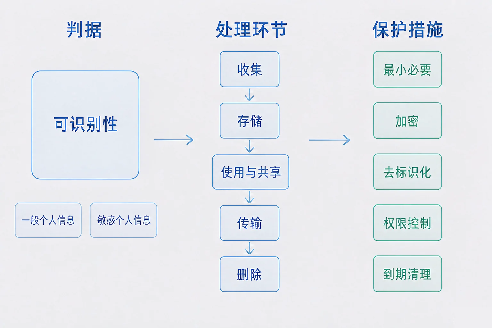
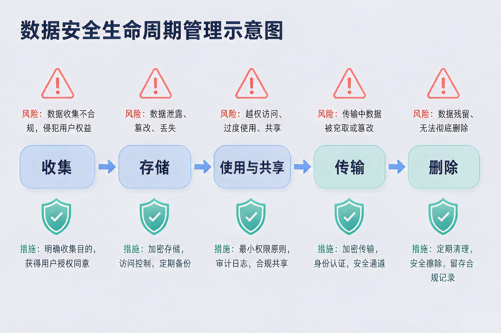
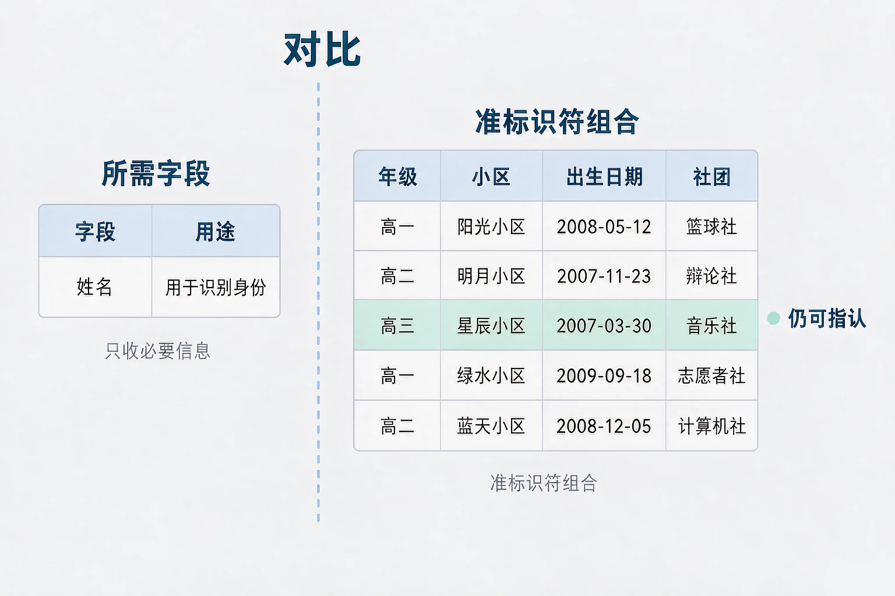

Gallery
v1.0.0 · skill v7.22.0
初中九年级 · 信息安全
一份去掉了姓名的名单，为什么还能被人认出来？

选一个你真正好奇的问题，后面的实验都会围着它转。
选择或输入后，这节课会围绕你的问题展开。
先凭直觉选一个，选完立刻看到解释——错了也没关系，正好知道要重点听哪里。
1. 一份名单去掉了姓名和学号，只留下年级、小区、出生日期和社团。它算不算已经匿名了？
判断是不是个人信息，看的是能不能识别到具体的人。姓名只是最显眼的一列，其余几列组合起来同样能做到。错因提醒：最常见的错误就是误认为「去掉姓名就等于匿名」，这也是重识别最常走的入口。
2. 下面哪一类信息属于敏感个人信息，一旦泄露影响更严重？
生物识别、行踪轨迹、医疗健康、金融账户，以及不满十四周岁未成年人的信息，都属于敏感个人信息，需要更严格的保护，通常还要单独取得同意。错因提醒：容易把「和身体有关」当成唯一标准，忽略了行踪轨迹这类同样高影响的信息。
3. 一个活动报名应用申请读取短信，但这个应用没有任何和短信相关的功能。这属于：
最小必要原则要求收集范围与用途对得上。对不上的权限，就是不应该交出去的权限。错因提醒：常见误解是「点了同意也没关系」——同意本身就是一次授权，它会改变对方能做什么。
为什么要学这一课？你已经知道数据在采集、传输、存储的每个环节都可能被人盯上，也学过用加密、权限、多因素认证把这些风险挡住。但那些手段回答的是「别人能不能拿到」。还有一件事它们回答不了：哪些数据本来就不该被收走，收走之后又该按什么规矩处理。所以我们需要先弄清楚「个人信息」到底指什么。
个人信息是指：以电子或者其他方式记录的、能够单独或者与其他信息结合识别到特定自然人的各种信息。判据只有一个词——可识别性。
一般个人信息
姓名、年级、社团、兴趣爱好等。处理时同样要遵守原则。
敏感个人信息
生物识别、行踪轨迹、医疗健康、金融账户，以及不满十四周岁未成年人的信息。泄露后影响更严重，通常需要单独同意。

🔍 深层理解 换个角度再看一遍这件事，看看能不能说出背后的原理。
看见它：同一个字段，放在不同的组合里，识别能力完全不同。小区单独看是公共场所信息，配上年级和出生日期，就能指到一个具体的人。
解释它：为什么「去掉了姓名」不够？因为识别靠的是缩小范围，不是靠唯一标识。每多一个字段，符合条件的人就少一批，直到只剩一个。
迁移它：快递面单上的姓名可以打码，但手机号、地址、订单时间凑在一起，同样能还原出是谁——这就是面单要整体脱敏的原因。
点任意一项权限即可切换「已同意 / 未同意」。右边会实时算出核心功能可用度和隐私暴露面。
应用申请的权限
实时结果
数据不是一件事，而是一段流程。从收进来的那一刻到删掉的那一刻，每个环节都可能出问题，所以保护措施也要一个环节一个环节地放上去。

三个高频误解：一是误认为「去掉了姓名就算匿名」——出生日期、小区、年级这些准标识符组合起来照样能指到人；二是误认为「勾选了同意就一切都合法」——同意只是五项原则中的一条，超范围收集、超用途使用仍然不合规；三是误认为「在应用里删掉记录，数据就没了」——删除要看的是后台是否真的清理，而不只是你的界面看不到了。
勾选要公开的字段，观察每一条记录所在的组有多大。组大小等于 1，就意味着这条记录能被直接指认。
题目：某社团要发布一份活动统计，计划公布四列：年级、小区、出生日期、社团。制表时已经去掉了姓名和学号。请判断这份名单是否可以发布，并给出处理办法。
最常见的两种错法：一是误认为去掉姓名就万事大吉，于是把出生日期这类强分辨度字段原样保留；二是把泛化当成万能药，以为处理过就一定安全。事实上泛化只是把分辨度降低，剩下的部分还要靠抑制字段、只发布汇总、限制访问范围来兜住。另一种容易搞混的是把「没人认得这张表」当成理由——判断依据是数据本身能不能被关联，不是现在有没有人去看。
先凭直觉选一个，选完立刻看到解释——错了也没关系，正好知道要重点听哪里。
1. 下面哪句话是正确的？
判据是可识别性，不是字段名称。照片本身就能识别人，属于个人信息，人脸还是敏感个人信息。错因提醒：最常见的就是按字段名称判断，把「看起来不像身份信息」的内容当成无关数据。
2. 某应用收集了手机号，说是用于登录，后来又把手机号用于短信推广。这违反了哪一项原则？
收集时说明的用途，就是处理范围的边界。换用途需要重新取得同意。错因提醒：容易搞混「用途变了」和「存储不安全」——这两件事对应的是不同原则，判断时要先找准被违反的那一条。
3. 把用户昵称改成编号，但表里仍然保留完整手机号。这次去标识化：
去标识化要去掉的是能直接指到人的标识符，手机号正是最典型的一种。错因提醒：常见错误是只处理「最显眼的那一列」，把真正有识别能力的字段留在原地。
场景：校园活动报名系统要处理一批学生信息，流程分五个环节。请为每个环节选择要做的措施，然后点评估。
① 流程的五个环节
② 可以做的措施
写下来，说给同桌听：如果评审时间只够你检查两个环节，你会先查哪两个？请说明理由，并指出你暂时不查的那几个环节可能留下什么风险。
先凭直觉选一个，选完立刻看到解释——错了也没关系，正好知道要重点听哪里。
1. 一位同学把活动合影发到了公开的页面上，照片里有其他同学的正脸。最需要注意的是：
人脸是可以直接识别到人的信息，属于敏感个人信息，公开前必须取得同意。错因提醒：常见错误是误认为「照片没有文字标注就不算信息」，忽略了图像本身就能识别。
2. 一张活动的二维码票根被发到群里，上面还有一串编号。可能有什么风险？
票根常与实名信息绑定，还能反映在什么时间出现在什么地方，也就是行踪轨迹，属于敏感个人信息。错因提醒：容易把「看不出是什么」当成「不会被用到」——关联能力取决于数据持有方，不取决于你有没有看懂。
3. 手机里存着三年前的一份报名表，上面有同学的手机号。按照教学内容里的原则，最合适的做法是：
可更正可删除与到期清理是五项原则里的要求，长期留存本身就是风险。错因提醒：把「没给别人看」等同于「没有风险」，是这一课最需要纠正的想法之一。
回到开头那份名单：它去掉的只是最显眼的那一列。四列里任意三列凑在一起，就足以让某一行只剩下一个人。真正要做的是把可被组合利用的分辨度降下来——泛化出生日期、合并小区、抑制社团，再把完整表的访问范围收窄。
给别人讲一遍：请用「可识别性、准标识符、最小必要」三个词，说明为什么「去掉姓名就能发布」这个判断是不成立的。
三层练习，做完第一、二层就算通关；第三层留给愿意继续探索的同学。
⭐ 基础巩固（必做）
⭐⭐ 能力应用（必做）
⭐⭐⭐ 迁移挑战（选做）
左边是学它之前要先会的，右边是学会之后可以继续探索的，下面是同一领域的伙伴知识。
图谱正在加载：首次进入需下载知识索引（约 1–3 秒），加载完成后本行会自动消失。